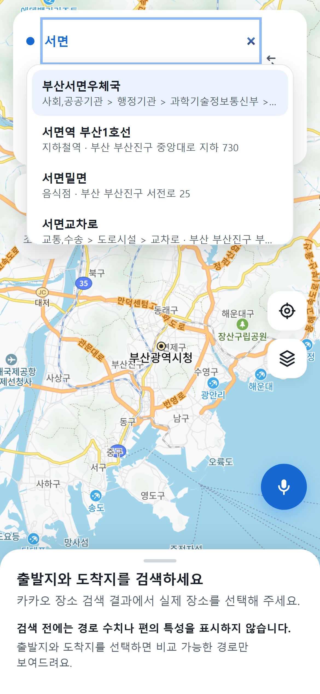
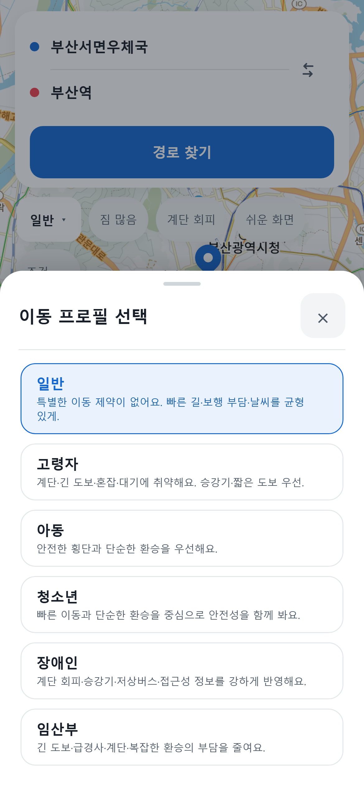
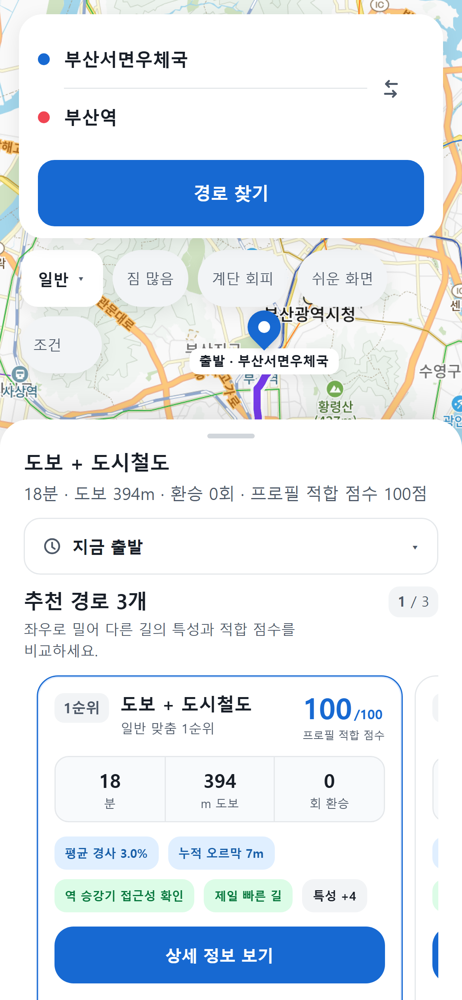
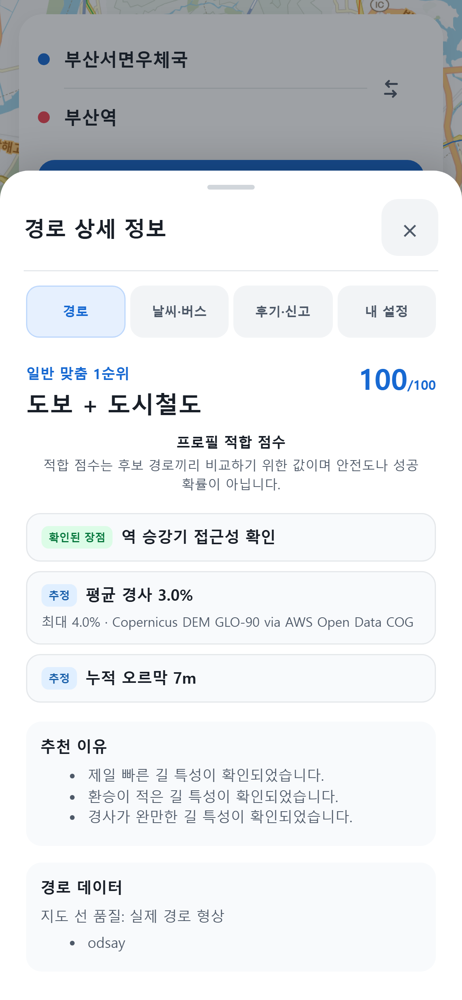

백엔드 API
클라이언트와 서버 기능을 연결하는 백엔드 API를 담당했습니다. 프로젝트의 백엔드는 FastAPI를 사용하며, 경로 추천과 장소 검색, 사용자 기능을 API로 제공합니다.
백엔드 코드 ↗백엔드 API부터 AWS 배포, 도메인 연결까지.
이현호의 프로젝트와 구현 경험을 담은 포트폴리오입니다.
부산의 이동 조건을
함께 보는 길찾기.
경사가 가파른 길, 계단이 있는 환승 구간, 그늘이 없는 보도. 최단 시간만으로는 누구에게나 편한 길을 고르기 어렵습니다.
동넷은 사용자의 프로필과 이동 조건을 바탕으로 부산의 보행·대중교통 경로를 비교하는 PWA입니다. 경사·계단·환승·그늘 정보를 지도와 경로 카드에서 함께 확인하도록 만든 팀 프로젝트입니다.
프로젝트 소스 보기 ↗



화면 출처: 동넷 팀의 공개 프로젝트 자료. 화면 속 수치는 촬영 당시의 예시이며 실시간 결과가 아닙니다.
제가 맡은 범위는
백엔드 API · AWS 인프라 · 도메인 연결입니다.
클라이언트와 서버 기능을 연결하는 백엔드 API를 담당했습니다. 프로젝트의 백엔드는 FastAPI를 사용하며, 경로 추천과 장소 검색, 사용자 기능을 API로 제공합니다.
백엔드 코드 ↗AWS 환경의 서비스 배포 인프라를 담당했습니다. 저장소에는 Docker 이미지를 ECR에 올리고, AI·백엔드·프런트엔드 ECS 서비스를 갱신하는 GitHub Actions 구성이 담겨 있습니다.
배포 워크플로 ↗서비스 주소인 dongnet.kr의 도메인 연결을 담당했습니다. 배포된 서비스에 도메인을 연결하는 과정까지 경험했습니다. 현재는 서버와 DNS 연결을 내려 둔 상태입니다.
배포 문서 ↗개인 담당 영역을 중심으로 정리했습니다. 경로 추천 모델·데이터 분석·프런트엔드 등 전체 기능은 팀이 함께 만든 결과입니다.
동넷의 공개 코드와 배포 설정을 바탕으로
요청부터 배포 주소까지의 구조를 정리했습니다.
화면의 요청을 API가 받고 필요한 데이터와 외부 서비스를 연결합니다. 사용자 정보는 PostgreSQL에 저장하고, SQLAlchemy와 Alembic으로 데이터 접근과 스키마 변경을 관리하는 구조입니다.
백엔드 구조 읽기 ↗워크플로가 컨테이너 이미지를 빌드해 ECR에 올리고 ECS 서비스를 갱신합니다. 서비스 안정화 대기와 HTTP 상태·준비 상태 검사가 배포 설정에 포함되어 있습니다.
배포 설정 읽기 ↗공개 문서는 ALB가 도메인의 HTTPS 요청을 서비스로 전달하는 구조를 설명합니다. 도메인 연결을 담당했으며, 현재 서버와 DNS 연결은 중단되어 있습니다.
운영 구성 읽기 ↗구조 설명용 도식입니다. 실제 API 호출이나 현재 서버 상태를 보여 주는 화면은 아닙니다.
경로를 비교하는 화면부터
서버와 배포 설정까지.
결과물은 공개 저장소의 소스 코드, 실제 화면 자료, 구현·배포 문서로 확인할 수 있습니다. 현재 서비스 서버와 DNS는 운영하지 않습니다.
기존 서비스 주소는 운영 중단 상태입니다. AI 점수는 후보 간 상대 적합도이며, 실제 통행의 안전도나 성공확률을 뜻하지 않습니다.
안녕하세요. 이현호, GitHub에서는 hyunho03이라는 이름으로 작업합니다. 백엔드 API 설계와 클라우드 배포, 서비스 운영에 관심을 두고 있습니다.
동넷에서는 화면의 요청을 처리하는 API와 AWS 인프라, 도메인 연결을 맡았습니다. 코드 작성에서 끝나지 않고, 사용자가 접근할 수 있는 서비스로 연결하는 과정에 집중합니다.